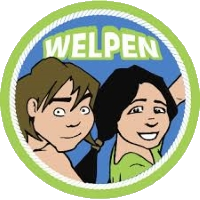

Scouting Phoenix Tiel
- Vol Vuur Vooruit -

Ben jij tussen de 7 en 11 jaar? Vind je het leuk om iedere week iets spannends te doen en grappige dingen te leren, samen met andere kinderen van jouw leeftijd? Kom dan bij de welpen en speel mee in de jungle!
De kinderen van 7 tot en met 11 jaar spelen in de jungle. Samen met de figuren uit Jungleboek beleven ze de spannendste avonturen. Bij het spelen aan de hand van een thema gebruiken de welpen hun fantasie en dit draagt bij aan de ontwikkeling van kinderen. Dit alles gebeurt onder leiding van deskundige vrijwilligers. Lees meer over wat Scouting is.
De welpen spelen in het thema van Jungleboek en beleven allerlei spannende avonturen in de jungle. De welpen identificeren zich met Mowgli of Shanti en spelen in de jungle met hun vrienden Baloe, Bagheera, Rikki Tikki Tavi, Marala en vele anderen. In de jungle is er altijd wat te doen en elk dier heeft zijn of haar eigen wijsheden en favoriete bezigheden. Chil vertelt de welpen bijvoorbeeld alles over vogels en Raksha weet weer veel over de verschillende dierensporen in de jungle. Met Marala zingen de welpen een leuk liedje en met de schildpad Oe leren ze alles over de onderwaterwereld. De verschillende activiteitengebieden (verzamelingen van activiteiten die qua onderwerp bij elkaar horen) zorgen ervoor dat er veel variatie in het programma zit en kinderen elke week iets anders doen. Op alles wat de kinderen bij de welpen leren, wordt voortgeborduurd bij de scouts. Dit heet bij Scouting de 'doorlopende leerlijn'.
Binnen onze vereniging hebben de Welpen elke week op zaterdag opkomst.
Er zijn drie groepen; een jongens, een meiden en een gemengde groep:
Wil je een keer komen kijken? Neem contact op via het Scout worden formulier!
Neem contact op